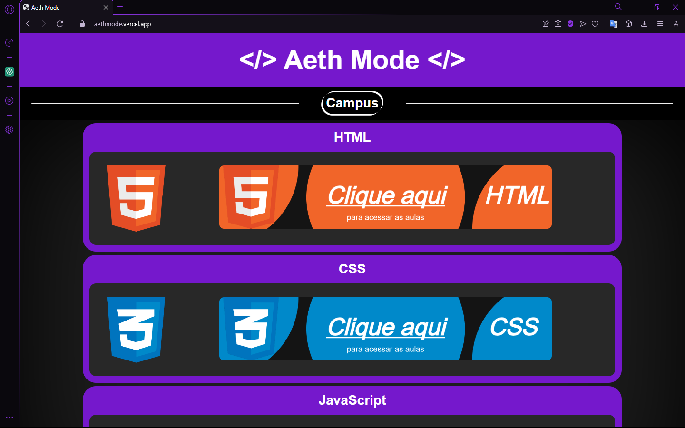
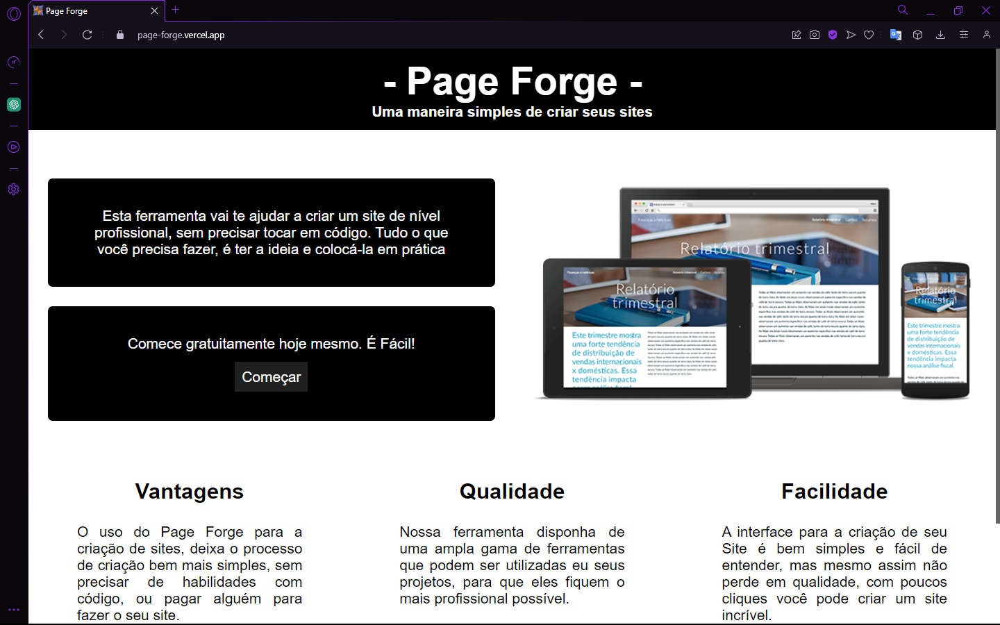

Aeth Mode
Tecnologias usadas para a criação do site:
JavaScript com jQuery, CSS responsivo e HTML.
Este site é mais do que apenas um projeto meu, é uma plataforma dedicada a capacitar aspirantes a desenvolvedores front-end. Desenvolvido com paixão e cuidado, oferecendo oportunidades de aprendizado de habilidades essenciais em web design.
Page Forge
Tecnologias usadas para a criação do site:
JavaScript com jQuery, CSS responsivo e HTML.
Este site é uma valiosa ferramenta gratuita que desenvolvi, projetada para capacitar aqueles que desejam criar sites de alta qualidade, mas não possuem habilidades em programação.